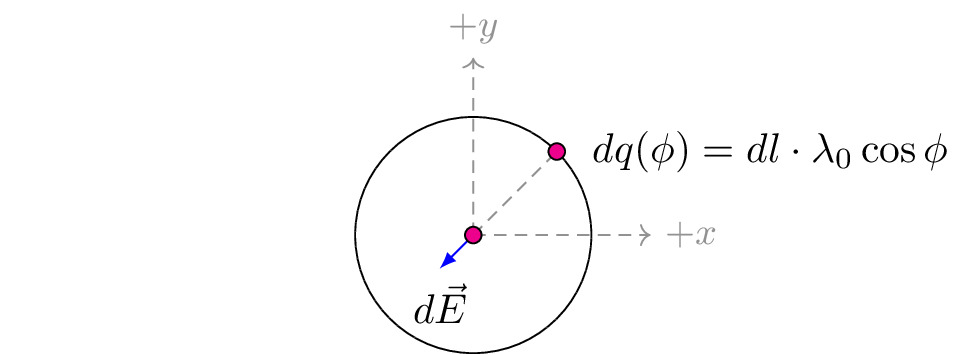

pre.tex
\documentclass[tikz]{standalone}\input{pre.tex}\begin{document}\begin{tikzpicture}
\draw (0,0) circle (1cm);
\draw (-4,0) circle (0cm);
\draw[axis,->] (0,0) -- ++(0,1.5) node[above] {$+y$};
\draw[axis,->] (0,0) -- ++(1.5,0) node[right] {$+x$};
\draw[axis] (0,0) -- ++ (45:1) coordinate (X);
\draw[force,->] (0,0) -- ++ (135+90:0.4) node[below] {$d\vec{E}$};
\draw[fill=magenta] (X) circle (2pt) node [right, xshift=0.5em] %
{$dq(\phi)=dl\cdot \lambda_0 \cos\phi$};
\draw[fill=magenta] (0,0) circle (2pt);% node [left] {$P$};
\end{tikzpicture}\end{document}